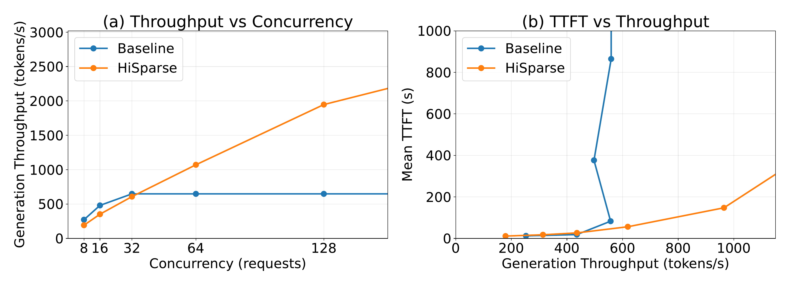
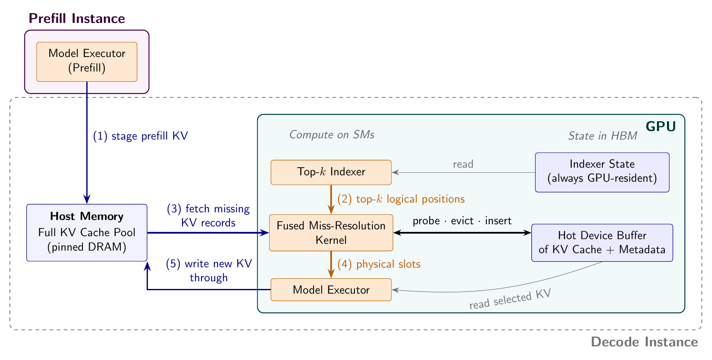
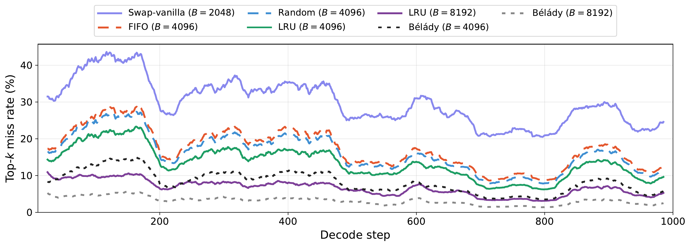
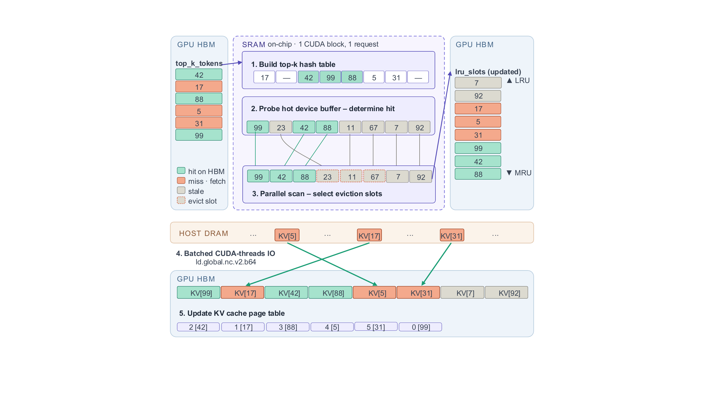
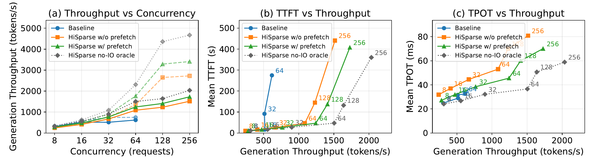
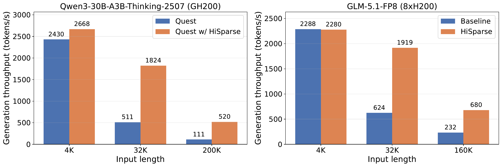

论文：HiSparse: Scaling Sparse-Attention Decoding with Hierarchical KV Cache Management
作者：Zhiqiang Xie（Stanford University & Meta）、Zhangheng Huang（Alibaba Group）、Tingwei Huang（Ant Group）、Ziyi Xu（Shanghai Jiao Tong University）、Ruiyang Ma（Peking University）、Christos Kozyrakis（Stanford University & NVIDIA Research）
发表：arXiv 预印本，2026 年 8 月，v1（NeurIPS 2026 投稿格式）
链接：https://arxiv.org/abs/2608.07009
代码：实现已合并进上游 SGLang（
--enable-hisparse启用）
top-$k$ 稀疏注意力把每步解码实际读的 KV 条目降到 $k$ 个，但 serving 系统仍要为"可能被读"而把完整上下文的 KV cache 驻留在 GPU 显存里——注意力计算便宜了，显存账单一个字节没少。HiSparse 把这两个要求拆开：完整 KV 历史放 host 内存，GPU 上每个请求每层只留固定 $B$ 格缓存，用 LRU 把选择的时间局部性变成约 87% 的命中率，一个融合 CUDA kernel 解析每层剩余的 miss，再在共享选择的模型上用精确预取藏掉约一半 IO。因为只改变 KV 的放置位置，模型输出逐位不变；长上下文负载的峰值生成吞吐最高提升 4.7 倍。理解这篇论文只需要跟住一条线索：显存到底在为什么付费。
| 术语 | 含义 |
|---|---|
| KV cache | 解码时保留的每个 token 在每层的 key/value 状态，随上下文长度线性增长（概念页） |
| HBM | GPU 高带宽显存（High Bandwidth Memory），KV cache 驻留的地方 |
| top-$k$ 稀疏注意力 / indexer | 每步由 indexer（选择器）挑出 $k$ 个历史位置，注意力只对它们计算（概念页） |
| 选择集 $\mathcal{S}_t^{(\ell)}$ | 解码步 $t$、层 $\ell$ 被选中参与注意力的 $k$ 个逻辑位置 |
| TTFT / TPOT | 首 token 前时延（含排队）/ 首 token 之后每生成一个 token 的平均时延 |
| PD-colocated / PD-disaggregated | prefill 与 decode 共享同一组 GPU / 分别部署在独立 GPU 池 |
| pinned host memory | 页锁定的主机内存，GPU 可以直接对其发起数据搬运 |
| GPU cache | HiSparse 在 HBM 里为每个请求每层预留的 $B$ 格 KV 缓存（论文图注称 hot device buffer） |
| LRU / Bélady | 最近最少使用替换（淘汰最久未被访问者）/ 离线最优替换（淘汰将来最晚再访问者） |
| anchor 层 / shared 层 | 运行 indexer 的层 / 复用前面 anchor 层选择结果的层 |
top-$k$ 稀疏注意力每步只读 $k$ 个 KV 条目，为什么长上下文解码还是先撞显存容量墙而不是算力墙？
注意力一步读的条目由选择集 $\mathcal{S}_t^{(\ell)}$ 决定，而选择集随解码步和层漂移——现在被跳过的位置之后可能被选中，所以 serving 系统把完整 KV cache 常驻 HBM 以保证每个逻辑位置随时可选。容量约束因此是 $N_{\text{batch}} \times L_{\text{ctx}}$ 个 token 的 KV 状态，而每步注意力实际只读 $N_{\text{batch}} \times k$ 个：上下文 32K、$k{=}2048$ 时驻留的是读量的约 16 倍（按 32K = 32768 tokens、$k{=}2048$ 计算精确为 16.0 倍）。GLM-5.1 一个 128K 请求的 BF16 KV 就有 13.09 GB，1M token 请求需要超过 100 GB 而 H200 只有 141 GB HBM；实测 8$\times$H200 上 32K 输入约 60 个并发就把可用的 HBM 填满，吞吐随即走平。完整论证见第 1 章。
HiSparse 如何在不改变模型输出的前提下，把每请求解码显存从随上下文长度增长改为有界？
解耦"逻辑可用"与"物理驻留"：host pinned 内存保存每请求完整 KV 的权威副本，GPU 侧每请求每层预留固定 $B$ 格 GPU cache（$B \ge k$）加页表和 LRU 元数据。解码 KV footprint 从 $N_{\text{batch}} N_{\ell} L_{\text{ctx}} W_{\text{KV}} s$ 变为 $N_{\text{batch}} N_{\ell} B W_{\text{KV}} s$——只与配置的 $B$ 有关，与上下文长度无关。GLM-5.1 在 $B{=}4096$ 时每请求约 0.4 GB，对比 128K 全量的 13.09 GB 约 30 倍。正确性靠三条保证：每层选择集在注意力前完成解析、$B \ge k$ 使当前选择放得下、新 token 的 KV 经事件排序的 write-through 保证 host 副本先于后续 fetch 完整。完整论证见第 2 章。
GPU 缓存用什么策略管理，才能把稀疏选择的时间局部性变成命中率？$B$ 应该多大？
只暂存当前 top-$k$（$B{=}k$）会丢掉局部性：LongBenchV2 选择 trace 上它平均 miss 30%，因为选择集每步都在漂移。用 LRU 管理 $B{=}2k$ 的缓存，选择局部性变成约 87% 命中率（miss 13.4%），优于 FIFO（17.2%）和随机替换（16.1%），并跟踪离线最优 Bélady（8.2%）的走势。替换策略的关键细化：同一步内命中过的条目在 recency 序上排到新拉取的 miss 之上，多次复用的位置因此能在逐出压力下存活。$B$ 的实用区间是 $[2k, 4k]$：更大提高命中率，但拉长元数据扫描并占用本可接纳更多并发的 HBM；host-device 链路越快，最优值越向 $B{=}2k$ 靠拢。完整论证见第 3 章。
剩余的 miss 怎么解析才能不上解码关键路径——解析本身为什么是单个融合 kernel，传输延迟为什么能藏进前面的层？
解析的每项操作——hit 检测、victim 选择、元数据更新、host fetch——在每个稀疏层的每步重复，拆成多个 CUDA launch 会反复把中间状态写回 HBM 还叠加 launch 延迟。HiSparse 把它们融成一个 Resolve kernel，一个 CUDA block 处理一个请求的工作项，整个捕获进 decode CUDA graph，重放时不需要任何 host 侧分支；逻辑索引进、物理槽位出。对共享选择的模型（GLM-5.2 的 IndexShare 每 4 层一组共享一个 indexer），anchor 层一发出选择集，同组 shared 层要读什么就全部已知：anchor 的 Resolve 顺带记录 miss 计划，side stream 上的 copy-only kernel 把计划重放进每个 shared 层的缓存，传输与中间层的计算重叠，shared 层等一个完成事件后直接复用 anchor 的槽位表、完全跳过解析。无 IO 的 oracle 实验证明解析机制本身零可测成本，全部代价是 host IO；精确预取把 TPOT 降低 13–15%，达到 oracle 吞吐上限的 85%。完整论证见第 4、5 章。
端到端收益多大、TPOT 付什么代价、什么条件下该用或不该用 HiSparse？
收益：Qwen3+Quest 在 GH200 上 200K 输入的峰值生成吞吐 111$\to$520 tokens/s（4.7$\times$），GLM-5.1 在 8$\times$H200 上 32K 为 3.1$\times$（624$\to$1919）、160K 为 2.9$\times$；4K 输入时几乎不变。收益全部来自同一杠杆——有界驻留让同样的 HBM 装下大得多的 decode batch，单步解码并不变快。代价：miss 的 host IO 暴露为 TPOT 开销，同步解析时并发 8 下 7.7 ms/token、并发 256 下 22.0 ms；精确预取压到 3.0 与 11.2 ms。当容量不构成瓶颈（短上下文或低并发）时没有收益可抵消这笔开销，论文的建议是直接禁用。上限也从 HBM 换成了 host 内存：Grace 类平台 LPDRAM 只有约 480 GB 时容量乘数随之缩小。完整论证见第 6 章。
top-$k$ 稀疏注意力把每步实际读取的 KV 条目降到 $k$ 个，但选择集跨步漂移迫使 serving 系统为整个上下文的 KV 支付 HBM 驻留——本章解释这堵墙从哪来、在真实部署里长什么样。
先复习接口。解码到第 $t$ 步时，top-$k$ 稀疏注意力的 indexer 对完整历史打分，挑出 $k$ 个逻辑位置组成选择集 $\mathcal{S}_t^{(\ell)} \subseteq \{1,\dots,L_{\text{ctx}}\}$（层 $\ell$、步 $t$，$|\mathcal{S}_t^{(\ell)}| = k$），注意力 kernel 只读这 $k$ 个位置对应的 key/value 记录。$k$ 通常只有几千——比模型瞄准的上下文窗口低一到两个数量级。一旦选择集确定，未选中的条目不参与本轮计算，所以每步的注意力开销确实被压到了 $O(k)$ 量级。论文评测的三种 selector（DSA token 级、NSA 块级、Quest 页级）在这一点上完全一致，差别只在怎么打分、以什么粒度选。
问题出在"每步"这两个字上。$\mathcal{S}_t^{(\ell)}$ 是随查询变化的：这一步没被选中的位置，下一步、下一层完全可能被选中。只要任何一个未来时刻的 top-$k$ 可能指回历史中的任何位置，serving 系统就必须保证每个逻辑位置的 KV 记录随时可读。最简单的保证方式就是全量驻留 HBM——于是出现论文称之为"跛脚的服务经济学"（lopsided serving economics）的局面：每步只读 $k$ 条，全部 $L_{\text{ctx}}$ 条却都占着 HBM，等着那个"可能被读"。论文的原话是：注意力便宜了几个数量级，而它的显存账单一个字节没掉（§1）。
把这件事写成约束就是容量墙的量化形式（§2.2）：一个 $N_{\text{batch}}$ 个请求的解码批，必须把 $N_{\text{batch}} \times L_{\text{ctx}}$ 个 token 的 KV 状态塞进权重、激活和 CUDA graph 状态之外剩下的 HBM，而每步注意力实际读的只有 $N_{\text{batch}} \times k$ 个 token。墙压在上下文长度与并发的乘积上：32K 输入时几十个并发就耗尽 HBM，128K 时同样的 HBM 只能装下四分之一。
常见误解：稀疏注意力把每步读的 KV 降到 $k$ 个，所以显存占用也降了。不对——读什么与什么必须驻留是两件事。只要选择集会漂移，系统就得为"可能被读"而全量驻留；计算量和驻留量在稀疏注意力里是两个独立的开销轴。
论文用 GLM-5.1（DSA，$k{=}2048$）的部署给出具体数字。KV cache 按每 token 每层的 key/value 元素数乘字节数增长（KV cache 概念页的尺寸公式），BF16 存储下一个 128K token 的请求持有 13.09 GB KV 状态；一个 1M token 的请求需要超过 100 GB，而 H200 整卡只有 141 GB HBM——权重驻留之后这种请求根本无法准入，可服务的上下文被显存卡在模型窗口之下。在 8$\times$H200（聚合 1.1 TB HBM）上以 32K 输入 / 8K 输出服务时，每个请求最多持有 4 GB KV，全量驻留的基线在约 60 个并发处饱和——大约 240 GB KV，正好是权重、激活和 CUDA graph 状态之外剩给 KV 的份额；128K 输入时同样的算术只容得下约 15 个请求（§1、§2.2）。
关注下面两张图的结构：吞吐-并发曲线在 HBM 填满后走平（加请求也进不来），混布模式的 TTFT 从那里开始陡升。
左图（a）是解码吞吐随并发的变化：基线在约 60 并发后饱和走平，HiSparse 继续扩展；右图（b）是混布模式下平均 TTFT 对吞吐：基线的 TTFT 在高吞吐区间急剧恶化，HiSparse 保持在低得多的水平。

图（原文 Figure 1）：GLM-5.1-FP8（DSA，$k{=}2048$）、8$\times$H200、32K 输入 / 8K 输出。(a) 解码吞吐对并发：基线一旦 HBM 饱和就不再随并发上升，HiSparse 继续扩展；更长的上下文在更低的并发处撞同一堵墙。(b) PD 混布模式的平均 TTFT 对吞吐：HiSparse 在更高吞吐下维持更低的 TTFT。这张图支撑本章的核心论断——长上下文稀疏解码的瓶颈是容量而非算力，且容量墙在混布模式下外溢为排队时延（C1、C2、N5、N7）。
两种常见部署模式撞墙的方式不同。PD 分离（prefill 与 decode 各用独立 GPU 池）时，decode 池的 HBM 容量直接封顶整个池的吞吐：论文测得 GLM-5.1 全量驻留的 decode-only 速率为 777 tokens/s，无论前面堆多少 prefill 容量，decode 池就是这个天花板。PD 混布（prefill 与 decode 共享 GPU 和 HBM）时，解码请求的全上下文 KV cache 挤占 prefill 分块需要的显存，新请求要同时等内存和 decode 槽位才能产出第一个 token，平均 TTFT 被排队时间主导、随负载陡增——这就是 Figure 1(b) 里基线 TTFT 的爬升（§2.2）。
墙的两侧都不缺另一侧的资源：撞墙时 attention kernel 还有算力余量（分离模式的 decode 池、混布模式的 prefill），缺的是装 KV 的地方。这提示出路不在算得更聪明，而在少付驻留费。
后面几章反复用同一个可手算的例子（构造示例，数字为教学设置，不是论文实验数据）。设一个请求只有 $L_{\text{ctx}}{=}8$ 个历史位置，indexer 每步选 $k{=}2$ 个位置。看这个选择序列：
| 解码步 $t$ | 选择集 $\mathcal{S}_t$ | 发生了什么 |
|---|---|---|
| 1 | $\{2, 5\}$ | 首次选择，两个位置都要读 |
| 2 | $\{2, 6\}$ | 位置 6 新进入；位置 2 连续两步被选 |
| 3 | $\{3, 6\}$ | 位置 3 新进入；位置 2 这一步被跳过 |
注意第 3 步：位置 2 暂时落选，但没有任何机制保证它之后不会回来（实际上第 4 步它就回来了）。这就是选择集漂移的最小标本——每个位置都必须保持可读，哪怕它当前不在 top-$k$ 里。全量驻留策略下，8 个位置的 KV 必须全部待在 HBM，尽管每步只读 2 个。这个例子将在第 2 章长出 host 副本与 GPU 缓存、在第 3 章走 LRU、在第 4 章完整过一遍 Resolve、在第 5 章扩展到多层共享选择。
为什么每步只读 $k$ 条 KV，系统却必须全量驻留？
选择集 $\mathcal{S}_t^{(\ell)}$ 由 indexer 按当前查询打分产生，随解码步和层变化；一个此刻未选中的位置无法被排除在未来的 top-$k$ 之外（贯穿示例第 3 步跳过位置 2、第 4 步它又回来）。为保证任何未来的选择都能被满足，serving 系统让全部 $L_{\text{ctx}}$ 个位置的 KV 驻留 HBM，形成 $N_{\text{batch}} \times L_{\text{ctx}}$ 的驻留约束，与每步 $N_{\text{batch}} \times k$ 的实际读取量脱钩（§2.2 的 admission constraint）。这是逻辑可用性要求，不是实现偷懒——在"选择前无法预知未来选择"的前提下，全量驻留是最直接的正确性保证。
容量墙在 PD 分离和混布两种模式下各表现为什么？
分离模式：decode 池 HBM 装满后调度器无法接纳更多解码工作，吞吐停在容量对应的上限（GLM-5.1 全量驻留 decode-only 777 tokens/s），与 prefill 侧容量无关（§2.2）。混布模式：解码请求的全上下文 KV 与 prefill 分块争同一份 HBM，新请求等内存和槽位的时间进入 TTFT，基线平均 TTFT 从并发 8 的 26 s 涨到并发 64 的 829 s（DeepSeek-V4-Flash 实验，§4.2），排队时延主导了首 token 时间。两种模式是同一约束（$N_{\text{batch}} \times L_{\text{ctx}}$ 驻留）在不同资源布局下的表现。
模型需要每个位置"逻辑可用"，GPU 只需要本步实际读的那些条目——HiSparse 用 host 内存的全量副本加 GPU 侧固定 $B$ 格缓存实现这个分离，解码显存从此与上下文长度无关。
第 1 章的约束里藏着一个被忽略的自由度。把"每个位置可选"理解成"每个位置此刻必须在 HBM"，是把逻辑可用性和物理驻留绑死了。系统真正需要保证的只是：当 indexer 在步 $t$、层 $\ell$ 发出 $\mathcal{S}_t^{(\ell)}$ 后、该层注意力启动前，这 $k$ 个位置的 KV 已经在设备上；至于其余条目此刻住在哪，不影响选中位置、注意力分数和输出（§2.3）。
但解耦本身不构成方案。如果每层每步的 $k$ 条选择都得从 host 内存现取，CPU-GPU 互连立刻成为新瓶颈——论文的估算（F3）：GLM-5.1 每 token 跨层求和约 100 KB 的 KV 记录，$k{=}2048$ 意味着每生成一个 token 要搬约 200 MB；TPOT 30 ms 之下这是每请求约 7 GB/s 的持续 host-to-device 流量，十几个并发就把一条 PCIe Gen5 $\times$16（约 64 GB/s 每方向）在 miss 上打满。让分层真正可行的，是选择序列自带的结构：相邻解码步的选择高度重叠，相邻层的选择相关——部分新模型甚至让一组层显式共享同一个选择（§2.3）。这种时间局部性正是"小快缓存 + 大慢后备"生效的场合。HiSparse 的设计就是把这个观察贯彻到底。
HiSparse 的结构由五条不变量刻画（§3.1）：
$$N_{\text{batch}} \, N_{\ell} \, B \, W_{\text{KV}} \, s \quad\text{（HiSparse）} \qquad\text{vs.}\qquad N_{\text{batch}} \, N_{\ell} \, L_{\text{ctx}} \, W_{\text{KV}} \, s \quad\text{（全量驻留）}$$
公式里没有别的东西：驻留量从"上下文长度"换成了"配置参数 $B$"。GLM-5.1（$W_{\text{KV}} s$ 使得 128K 全量为 13.09 GB）在 $B{=}4096$ 时每请求约 0.4 GB，请求准入时预留的也是这个数（$N_{\ell} B W_{\text{KV}} s$，§3.3），约 30 倍的缩减（F1、F2、N4）。边界检查：$B \ge k$ 是硬条件——当前选择集必须整体放得进缓存，否则解析无法完成。
结构上只有 KV 记录在两层之间流动。Host 层是 host KV pool：pinned host DRAM 里所有活跃请求的权威完整 KV——混布部署中 prefill 直接写入本池，分离部署中 prefill 实例经传输路径把 KV 送到解码实例的 host 池。GPU 层是每请求每层的 GPU cache：$B$ 个槽位缓存该层最近被选中的 KV 记录，配套两份小元数据——页表（把每个层内逻辑位置映射到缓存槽位，或标记为 host-only）和 LRU 元数据（记录槽位的新旧程度、驱动替换）。
"不迁移"那一层值得单独强调。indexer 的打分状态必须每步可用，如果它也在 host，每步还得先取打分状态、再取 KV，分层就白做了。幸运的是选择状态天然紧凑：DSA 每 token 一个紧凑 indexer key、NSA 每 token 块一个压缩 key、Quest 每 page 一对 min/max 向量——都远小于 KV 记录本身。论文的量级对比（C7、N15）：选择状态加页表合计每 token 至多几百字节，KV 记录约 100 KB/token，差两三个数量级；论文部署中选择状态总共数百 MB，对比它替换掉的每请求数 GB 的 HBM KV。论文对三种 selector 的接口级对比（Table 1）：
| Selector | 选择状态（内存） | 选择计算 | 粒度与备注 |
|---|---|---|---|
| DSA | 每 token 一个紧凑 indexer key | 对历史打分，取 token 级 top-$k$ | token 级；与主干协同训练 |
| NSA | 每 token 块一个压缩 key | 对块打分，选 top 块 | 块级；可训练架构 |
| Quest | 每 page 的 min/max key 向量 | 按查询感知上界选 page | 页级；training-free |
三者状态都紧凑到可以 HBM 常驻、选择都在注意力碰 KV 之前完成、输出都是同形的"每层一组逻辑位置"——HiSparse 正是插在这个接口上（§2.1）。
一个请求经过四步（§3.3）。(1) prefill 与装载：prefill 引擎按模型正常路径处理 prompt，各层产出的 KV 状态写入 host 池；必须每步可用的紧凑 indexer 状态留在设备上。(2) 准入：host 侧 KV 就绪且每层 GPU cache 与元数据预留完毕后，请求才可被调度解码——每请求预留量是 $N_{\ell} B W_{\text{KV}} s$，正比于 $B$ 而非 $L_{\text{ctx}}$，长上下文请求不再按完整历史吃掉解码 HBM。(3) 逐层解码：步 $t$ 层 $\ell$ 上，indexer 发出选择集，miss 解析路径检查哪些选中位置已在缓存、从 host 池拉取缺失的该层记录、更新页表与 LRU，然后产出一个与选中位置对齐的物理槽位稠密向量，该层的注意力 kernel 才启动。(4) 生成 KV 的写回：每个新生成 token 的 KV 记录直接产出到该请求 GPU cache 的保留槽位（最新位置永远驻留，供接下来的选择使用），一条专门的 backup stream 再把它 write-through 回 host 池，与下一步计算重叠、以事件排序保证后备副本在任何后续 fetch 引用它之前完整。
下图是论文的系统总览，五个编号对应上面的数据流：prefill 写 host 池（1）、indexer 发选择（2）、Resolve 探测并拉取（3）、交出物理槽位（4）、write-through（5）。
系统的两层结构与五步数据流：host 内存保存权威完整 KV，GPU 只保留每请求每层的 GPU cache 与紧凑选择状态，Resolve kernel 站在选择与注意力之间。

图（原文 Figure 2）：HiSparse 总览。host 内存持有每个活跃请求的权威完整 KV cache；GPU 只保留紧凑状态（indexer 状态、带页表与 LRU 元数据的每请求每层 GPU cache）并承担全部计算。(1) prefill 把各层 KV 记录写入 host 池；解码期间 (2) 稀疏 indexer 发出选中的逻辑位置，融合 Resolve kernel 探测 GPU cache，(3) 从 host 池拉取缺失记录并逐出 LRU victim，(4) 把物理缓存槽位交给稀疏注意力后端；(5) 新生成 token 的 KV 记录 write-through 回 host 池（C3、C9）。
给 8 位置例子装上层级（构造示例）。Host 池有 8 条 KV 记录（每层一套）。GPU cache 取 $B{=}4$ 格，页表把逻辑位置映射到槽位或 host-only 哨兵。沿用第 1 章的选择序列走三步之后（LRU 细节下一章展开，这里只看结构），槽位分配可能是：第 1 步装入位置 2$\to$槽 0、位置 5$\to$槽 1；第 2 步位置 6$\to$槽 2；第 3 步位置 3$\to$槽 3。此时页表快照：
| 逻辑位置 | 1 | 2 | 3 | 4 | 5 | 6 | 7 | 8 |
|---|---|---|---|---|---|---|---|---|
| 驻留 | host-only | 槽 0 | 槽 3 | host-only | 槽 1 | 槽 2 | host-only | host-only |
第 4 步选择 $\{2, 5\}$：两个位置都在页表里命中槽 0 和槽 1，注意力直接读缓存，不发生任何 host 访问。新 token（位置 9）出生时，它的 KV 记录直接写进本请求 cache 的保留槽位，随后 write-through 回 host 池的位置 9——host 副本永远是完整的 9 条。注意一个对正确性关键的细节：如果 write-through 还没完成、而未来某步的选择集包含位置 9，fetch 必须等到事件确认副本完整才能读——这就是"以事件排序保证后备副本先于后续 fetch 完整"的含义（§3.3）。
为什么不能每步直接从 host 内存取全部 $k$ 条选择？
反设每层每步的选择都从 host 取（F3）：GLM-5.1 跨层求和每 token 约 100 KB KV 记录，$k{=}2048$ 下每生成一个 token 需搬约 $2048 \times 100\,\text{KB} \approx 200$ MB；TPOT 30 ms 意味着每请求约 $200\,\text{MB} / 30\,\text{ms} \approx 7$ GB/s 的持续 host-to-device 流量。一条 PCIe Gen5 $\times$16 每方向约 64 GB/s，十几个并发请求的 miss 流量就把它打满——互连成为新瓶颈，分层的收益被搬运吃光。让方案成立的缺口是选择序列的时间局部性（步间重叠、层间相关），它把"每步全取"变成"多数命中、少数拉取"（§2.3）。
HiSparse 用什么结构保证输出不变的同时 footprint 有界？
结构：host pinned 内存保存完整 KV 权威副本（逻辑可用性），GPU 每请求每层 $B$ 格 cache 加页表和 LRU 元数据（驻留有界，$N_{\text{batch}} N_{\ell} B W_{\text{KV}} s$，与 $L_{\text{ctx}}$ 无关）。输出不变靠三条：每层选择集在该层注意力启动前完成解析（选中条目已物化在设备上）、$B \ge k$ 保证当前选择集整体放得下、新 token 的 write-through 以事件排序先于任何后续 fetch 完成（host 副本始终完整）。因为只改变未选中条目的驻留位置、不丢弃不近似，选中位置、注意力分数和输出与全量驻留逐位一致（§3.1 的五条设计目标，C3–C6）。
$B$ 格缓存装什么是命中率的全部——只暂存当前 top-$k$ 会丢掉跨步局部性（miss 30%），LRU 加 hit 提升把它降到 13.4%，$B$ 的实用区间是 $2k$ 到 $4k$。
第 2 章留下的悬念：GPU cache 的 $B$ 格里到底装什么。最省事的做法是把它当 top-$k$ 的中转站——每步解析后缓存里恰好是当前选择集。论文的数据说明这恰恰是最差的选择。
论文重放了一条真实的选择 trace：GLM-5.1 服务一个 100,384 token 的 LongBenchV2 prompt，解码 1,799 步、覆盖全部 78 个稀疏层，统计前 1,000 步（各策略重放完全相同的每层 top-$k$ 选择流，差异只来自替换决策）。只保留当前 top-$k$（$B{=}k{=}2048$，论文称 Swap-vanilla）平均 miss 每步选择的 30%（§4.3、Figure 6）。原因就是第 1 章的漂移：选择集每步都在换血，上一步的 top-$k$ 与这一步的重叠不足以让"恰好装下当前选择"的缓存命中——位置 6 在第 2 步新进入时，第 1 步的缓存里只有 $\{2,5\}$，必然 miss。
贯穿例子里同样的算术（构造示例）：$B{=}k{=}2$ 时走完 5 步选择序列（$\{2,5\},\{2,6\},\{3,6\},\{2,5\},\{4,5\}$），10 次选择 miss 7 次。注意一个结构性事实：$B{=}k$ 时 LRU 自动退化为"每步全换"——每步结束时缓存必须恰好装下当前选择集（$k$ 条），任何未选中的驻留条目都被挤出去，所以 $B{=}k$ 的 LRU 与 Swap-vanilla 是同一个东西。这也是论文把 Swap-vanilla 标注为 $B{=}2048$ 的原因。
把 $B$ 翻倍到 4096（$2k$），用 LRU 管理，命中率立刻改观：平均 miss 降到 13.4%——约 87% 的选择在设备上命中。论文同时对照了 FIFO（17.2%）和随机替换（16.1%），以及离线最优的 Bélady 策略（8.2%）：Bélady 知道未来全部选择、每次逐出将来最晚再用的条目，是这个容量下可达的命中率上限。LRU 不仅 miss 低于 FIFO 和随机，曲线形状还跟踪 Bélady 的走势——说明"最近被选过"是"将来还会被选"的良好在线代理（§4.3）。
HiSparse 的替换策略在 LRU 上做了一个精细化（C8）：同一步内，命中的条目在 recency 序上排到新拉取的 miss 之上。效果是跨步反复被选的位置在逐出压力下排在前面，一次性路过的位置先走；缓存逐渐积累起"被证明有多次复用"的位置。每请求每层的缓存独立管理——KV 记录本来就是层内私有的，跨层协调驻留带来的收益不大（论文在预取实验中验证了这一点），跨层的选择相关性留给了第 5 章的机制去利用。
关注这张图的三件事：Swap-vanilla 的高位、LRU 相对 FIFO/随机的稳定优势、以及 $B$ 从 $2k$ 加倍到 $4k$ 时 miss 再减半。
七条 miss 率曲线对应七种缓存配置，横轴是解码步（平滑后），纵轴是每步 top-$k$ 的 miss 率（跨层平均）。

图（原文 Figure 6）：重放同一条 GLM-5.1（$k{=}2048$）LongBenchV2 选择 trace 时，七种缓存配置的每步 miss 率（跨层平均、平滑；$B$ 按每请求每层的 KV 记录槽位计）。Swap-vanilla（$B{=}2048$）平均 miss 30%，因为它不保留任何额外热条目；同样预算 $B{=}4096$ 下 LRU（13.4%）稳定优于 FIFO（17.2%）和随机（16.1%），并跟踪离线 Bélady 最优（8.2%）的走势；LRU 缓存加倍到 $B{=}8192$ 时 miss 再减半到 6.7%。这张图支撑本章核心论断：保留的局部性直接转化为更少的 host 内存搬运（N6、N18）。
| 缓存配置（每请求每层） | 平均 miss 率 | 说明 |
|---|---|---|
| Swap-vanilla，$B{=}k{=}2048$ | 30% | 只暂存当前 top-$k$，等于 $B{=}k$ 的退化 LRU |
| 随机替换，$B{=}4096$ | 16.1% | 同预算对照 |
| FIFO，$B{=}4096$ | 17.2% | 同预算对照 |
| LRU + hit 提升，$B{=}4096$（HiSparse） | 13.4% | 命中率约 87% |
| Bélady 离线最优，$B{=}4096$ | 8.2% | 知道未来的上限，衡量预测性替换的剩余空间 |
| Bélady 离线最优，$B{=}8192$ | <8.2% | Figure 6 中“也展示”，§4.3 未给出具体数值 |
| LRU + hit 提升，$B{=}8192$ | 6.7% | 容量再翻倍，miss 再减半 |
表中数字的实验条件：单条 LongBenchV2 trace（GLM-5.1，100,384 token prompt，78 层），统计前 1,000 解码步；不同负载的选择局部性不同，miss 率会随之变化（本节推断，§4.3 仅报告了单一 LongBenchV2 trace 的数据）。
$B$ 是容量、时延和显存的三向拉扯（§3.2 Sizing、§4.4）。加大 $B$ 提高命中率、减少 miss 带来的 IO；但每请求每层多占的 HBM 本可以接纳更多并发请求，而且 Resolve kernel 要探测和扫描的槽位也变多、时间变长。论文跨模型测得的实用区间是 $B \in [2k, 4k]$：足以留住热条目，又不至于让元数据扫描或 HBM 容量成为新瓶颈。另一个方向的规律是：host-device 链路越快，最优 $B$ 越小——miss 拉取变便宜后，花 HBM 和扫描时间去避免它就不划算，GH200 的 NVLink-C2C 把实用点推向 $B{=}2k$（第 6 章展开数字）。$B$ 在 HiSparse 里是部署时固定的静态参数，按平台 profiling 选择（动态调整留作未来工作）。
在 8 位置例子上走 LRU（$B{=}4$，hit 提升，hit 按选择集内顺序排位——构造示例的约定）。每步结束时的 recency 序（从最旧到最新）为：未选中的驻留条目（保持原相对序）$\to$ 本步新拉取的 miss $\to$ 本步命中的条目：
| 步 $t$ | 选择集 | hit | miss | 步末 recency 序（旧$\to$新） |
|---|---|---|---|---|
| 1 | $\{2,5\}$ | — | 2, 5 | 2, 5 |
| 2 | $\{2,6\}$ | 2 | 6 | 5, 6, 2 |
| 3 | $\{3,6\}$ | 6 | 3 | 5, 2, 3, 6 |
| 4 | $\{2,5\}$ | 2, 5 | — | 3, 6, 2, 5 |
| 5 | $\{4,5\}$ | 5 | 4 | 6, 2, 4, 5 |
两个观察。第一，第 4 步零 miss：位置 2 和 5 在第 1 步进入缓存后，靠第 2、3 步的"未选中但未被逐出"活到了第 4 步——多出来的 $B - k = 2$ 格就是干这个的。第二，第 5 步位置 4 miss、需要逐出一个 victim：候选是未选中的驻留条目 $\{3, 6, 2\}$ 中最旧的 3（victim 选择的完整过程在第 4 章手算）。整个 5 步 10 次选择共 miss 5 次（50%）；同样的序列在 $B{=}2$ 下 miss 7 次（70%）——$B$ 翻倍、miss 从 70% 降到 50%，正是 3.2 节 30%$\to$13.4% 那条曲线的微缩版。完整演算（含每步页表快照与 $B{=}2$ 的逐步对照）在折叠块里。
初始状态：缓存空，页表全部 host-only。第 1 步 $\{2,5\}$：两个 miss，装入槽 0（位置 2）、槽 1（位置 5）。页表：2$\to$槽 0，5$\to$槽 1。recency：2, 5（均为新 fetch，按选择集顺序排）。第 2 步 $\{2,6\}$：位置 2 命中槽 0；位置 6 miss 装入槽 2。未选中的驻留条目 $\{5\}$ 保持原序，新 fetch 的 6 排在其后，hit 的 2 排最前（最新）：recency 旧$\to$新 = 5, 6, 2。第 3 步 $\{3,6\}$：6 命中槽 2；3 miss 装入槽 3（还有空槽，不逐出）。recency = 5, 2, 3, 6。第 4 步 $\{2,5\}$：2、5 双命中，零 miss、零逐出。未选中的 $\{3,6\}$ 保持原序，hit 的按选择集顺序 2、5 排前：recency = 3, 6, 2, 5。第 5 步 $\{4,5\}$：5 命中槽 1；4 miss。缓存满（4 格），需逐出 1 个：未选中的驻留条目按旧$\to$新为 3, 6, 2，victim = 最旧的 3（槽 3），位置 4 装入槽 3。recency = 6, 2, 4, 5。步末页表：2$\to$槽 0、5$\to$槽 1、6$\to$槽 2、4$\to$槽 3，其余 host-only。合计 miss 5/10 = 50%。
$B{=}2$ 对照（退化为 Swap-vanilla）：第 1 步 $\{2,5\}$ miss 2（槽 0$\leftarrow$2、槽 1$\leftarrow$5）；第 2 步 $\{2,6\}$：2 命中、6 miss，但装入前必须先逐出未选中的 5——步末缓存恰为 $\{2,6\}$；第 3 步 $\{3,6\}$：6 命中、3 miss、逐出 2，缓存 $\{3,6\}$；第 4 步 $\{2,5\}$：两个都不在缓存里，miss 2、逐出 3 和 6，缓存 $\{2,5\}$；第 5 步 $\{4,5\}$：5 命中、4 miss、逐出 2。合计 miss 7/10 = 70%。对照的要点：第 4 步 $\{2,5\}$ 在 $B{=}4$ 下零 miss、在 $B{=}2$ 下双 miss——多出的两格在两步之间"收留"了这两个位置。
下面一段可运行代码把同样的机制放大到 200 步、64 个位置的构造 trace 上（热点窗口缓慢漂移），对比 $B{=}k$、$B{=}2k$、$B{=}4k$ 三档的 miss 率：
import random
from collections import OrderedDict
def make_trace(n_steps=200, L=64, k=8, window=24, drift_every=4, seed=7):
"""构造选择 trace：每步从当前热点窗口中随机选 k 个位置，窗口定期漂移 1。"""
rng = random.Random(seed)
start = 0
trace = []
for t in range(n_steps):
if t and t % drift_every == 0:
start = min(start + 1, L - window)
pool = list(range(start, start + window))
trace.append(sorted(rng.sample(pool, k)))
return trace
def resolve(sel, lru, B):
"""一步解析：返回 (miss 数, 步末 recency 序)。
recency 序为旧 -> 新；本步结束时的排位规则：
未选中的驻留条目（按原相对序）< 新 fetch 的 miss < hit（按选择集序）。
hit 永不被逐出；victim 从未选中的驻留条目中取最旧者。
"""
hits = [p for p in sel if p in lru]
new = [p for p in sel if p not in lru]
others = [p for p in lru if p not in set(sel)]
keep = B - len(hits) - len(new) # 未选中条目还能留下的数量
others = others[max(0, len(others) - keep):] # 逐出最旧的
order = others + new + hits
return len(new), OrderedDict((p, None) for p in order)
def miss_rate(trace, B):
lru = OrderedDict()
misses = total = 0
for sel in trace:
m, lru = resolve(sel, lru, B)
misses += m
total += len(sel)
return misses, total
trace = make_trace()
k = 8
for name, B in [("Swap-vanilla (B=k=8)", k),
("LRU (B=2k=16)", 2 * k),
("LRU (B=4k=32)", 4 * k)]:
m, t = miss_rate(trace, B)
print(f"{name:24s} miss {m:4d}/{t} = {m / t:6.1%}")预期输出：
Swap-vanilla (B=k=8) miss 1048/1600 = 65.5%
LRU (B=2k=16) miss 546/1600 = 34.1%
LRU (B=4k=32) miss 63/1600 = 3.9%验证的机制：resolve 对应第 4 章Resolve 的替换语义——hit 检测（hits）、victim 选择与 LRU 更新（others 的截断与 order 的拼接）、miss 计数。排位规则"未选中 < 新 fetch 的 miss < hit"就是 3.2 节的 hit 提升。
观察重点：同样 200 步、每步选 8 个位置，$B{=}k$ 时 miss 65.5%（选择集每步换血约 5 个位置，全部要重取）；$B{=}2k$ 降到 34.1%（多数换血位置在近几步被选过、仍在缓存里）；$B{=}4k$ 覆盖了整个 24 位置的热点窗口，miss 趋近零。三档的形态与论文 Figure 6 的 30% / 13.4% / 6.7% 定性一致。
简化条件：构造示例。单一层、无层间共享、记录等长、trace 由热点漂移模型合成而非真实模型采样；数字用于展示机制的相对效果，不是论文实验数据。真实 trace 的换血比例与窗口结构不同，miss 率的绝对值会不同。
为什么只存当前 top-$k$ 不够，LRU 的 hit 提升又改变了什么？
$B{=}k$ 时缓存每步末恰好等于当前选择集，下一步新进入的位置（论文 trace 上平均每步 30%）全部 miss——而且 $B{=}k$ 的 LRU 自动退化为这种每步全换的策略。$B{>}k$ 后多出的格数收留"最近用过但此刻未选中"的位置，靠 LRU 决定去留。hit 提升的细化改变的是 recency 序的构造：同一步内命中的条目排到新拉取的 miss 之上，于是跨步反复被选的位置（真正的热条目）始终排在一次性路过的位置之前，逐出压力下先走的是后者。论文 trace 上这一套组合在 $B{=}2k$ 时 miss 13.4%，优于 FIFO 17.2% 和随机 16.1%，且曲线跟踪 Bélady（8.2%）的走势（§4.3，Figure 6）。
$B$ 加倍的收益与代价各是什么？Bélady 对照说明什么？
收益：论文 trace 上 $B$ 从 $2k$ 加倍到 $4k$，LRU 的 miss 从 13.4% 再减半到 6.7%——miss 直接对应 host 内存搬运量，也就是第 6 章的 TPOT 代价来源。代价：每请求每层的 HBM 占用翻倍（$N_{\text{batch}} N_{\ell} B W_{\text{KV}} s$），挤占并发容量；Resolve kernel 要探测扫描的槽位数也翻倍，拉长解析时间。Bélady（知道未来、逐出将来最晚再用的条目）在同容量 $B{=}4096$ 下 miss 8.2%：它与 LRU 13.4% 的差距衡量"更聪明的预测性替换"在同一容量下还能收回多少——论文把它留作设计空间的标尺而非实现选项。实用区间综合为 $B \in [2k, 4k]$，链路越快最优值越小（§3.2、§4.4）。
hit 检测、victim 选择、元数据更新和 host fetch 在每个稀疏层的每步重复出现——HiSparse 把它们融成一个 CUDA kernel、捕获进 decode CUDA graph，逻辑索引进、物理槽位出。
miss 解析站在每个稀疏注意层的解码关键路径上：给定本层选择集，系统要识别命中、为 miss 挑 victim、拉取缺失记录、更新元数据、把物理槽位交还给注意力后端。这套操作每层每步都要跑一遍——在没有跨层共享选择的模型上，以 78 个稀疏层为例，每生成一个 token 就要跑 78 次。GLM-5.2 用 IndexShare 把 21 个 anchor 与 57 个 shared 层配成组，shared 层跳过解析的全部分阶段、直接复用 anchor 的 slot 表，所以实际每 token 只跑 21 次 Resolve（§3.5、§4.6）。拆成多个 CUDA launch 的代价有两层：launch 延迟本身在每层叠加；更糟的是各步的中间状态（hit/miss 标记、victim 分配、LRU 更新、输出位置向量）都依赖同一份选择集和驻留元数据，跨 kernel 传递就得反复把临时状态写回 HBM 再读出来（§3.4）。
HiSparse 的回答是把全部解析做成一个融合 kernel——Resolve——每个稀疏层启动一次，一个 CUDA block 负责一个请求的工作项。整个 kernel 被捕获进 SGLang 稳态解码的 CUDA graph：图重放时所有元数据更新和 IO 发起都不需要 host 侧分支。这一点是硬约束——CUDA graph 录制的是固定的 GPU 工作序列，任何"看情况再决定"的 host 逻辑都会让捕获失败。Resolve 能进图，是因为它只消费两样东西：indexer 发出的逻辑位置、HiSparse 自己的 GPU 驻留元数据。这也顺便解释了 indexer 无关性：DSA、NSA、Quest 在这一层看到的接口完全一样——逻辑索引进、物理槽位出，论文类比为一个软件管理的 TLB（§3.4 原句「logical indices in, physical slots out」）。页面的对应解读：地址翻译$\leftrightarrow$KV 记录定位、页表错失$\leftrightarrow$host 拉取——只对应接口形态，不延伸到 TLB 的其他语义。
下方的原图给出一个请求一个层的 Resolve 内部结构，五个阶段按执行顺序排列：
Resolve kernel 的五个阶段：共享内存哈希表登记选择集、并行探测 B 个槽位标记 hit 与可逐出、并行 scan 选 victim 并更新 LRU、GPU 线程直接从 pinned host 内存拉取缺失记录、发布物理槽位向量。

图（原文 Figure 3）：融合 miss 解析 kernel。对一个请求和一层，Resolve 先为选中的逻辑位置构建共享内存哈希表，随后并行探测每个 GPU cache 槽位、标记 hit 或逐出候选，用并行 scan 选择 victim 并更新 LRU 元数据，从 pinned host 内存拉取缺失的 KV 记录，最后按 top-$k$ 顺序为稀疏注意力后端发布物理设备槽位（C11）。
阶段 1：登记选择集。线程协作把本层 top-$k$ 向量装入一个共享内存哈希表。之后的成员判断（"这个位置在不在选择集里"）都查哈希表，不必反复从 HBM 重读 top-$k$ 向量。
阶段 2：标记槽位。线程并行探测 $B$ 个缓存槽位：槽里驻留的逻辑位置在哈希表里就是 hit，否则标记为可逐出。注意方向——探测的是"缓存里有什么"，对照物是"这一步要什么"，与第 3 章 recency 序的视角一致。
阶段 3：scan 与 LRU 更新。对逐槽标记做并行 scan：压缩可逐出槽位列表，为缺失的选中位置挑出足够数目的 victim，并产出步后的 LRU 元数据。hit 槽位保留并提升到最新端，victim 槽位分配给 miss，拉取到的 miss 排在 hit 之后——正是 3.2 节的替换策略。
阶段 4：拉取缺失记录。负责各 miss 的线程把对应的层内 KV 记录从 pinned host 池拷进认领的设备槽位。这里用的是 Strata 的 GPU-assisted IO：不做 DMA 拷贝的 staging，GPU 线程直接对 pinned host 内存发向量化非一致加载（ld.global.nc.v2.b64）。分散的 miss 地址在这种模式下被容忍，每线程的传输块大小经过调优，使碎片化的读仍能接近链路带宽（C12）。选这条路的原因与 Strata 相同：miss 的地址天然分散，逐条小 DMA 的事务开销吃掉带宽。
阶段 5：发布注意力输入。更新页表，输出 top_k_device_locs——与选中逻辑位置对齐的物理设备槽位稠密向量。下游的稀疏注意力 gather 直接从 GPU cache 的这些槽位读 KV。
输入：本层选择集 top_k_pos[0..k-1]（逻辑位置，来自 indexer）
状态：GPU cache 槽位 slot[0..B-1]（各自驻留一个逻辑位置或空）
页表 page_table（逻辑位置 → 槽位 或 HOST_ONLY）
LRU 序 lru_order（旧 → 新）
host 池指针 host_pool（pinned，层内记录）
输出：top_k_device_locs[0..k-1]（物理槽位，与 top_k_pos 对齐）
更新后的 slot / page_table / lru_order
阶段 1 build_hash(top_k_pos) → 共享内存哈希表 H
阶段 2 for 每个槽位 s in 0..B-1 并行:
mark[s] = HIT 若 slot[s] 的位置 ∈ H
= EVICTABLE 否则
阶段 3 scan(mark[0..B-1]):
hits = 按 lru_order 中原有相对序收集 HIT 槽位
miss_count = k - |hits|
victims = 从 EVICTABLE 槽位中按 lru_order 取最旧的 miss_count 个
lru_order = [未被选中的驻留条目（保留原序，截到容量)]
++ [本次 fetch 的 miss（按选择集序）]
++ [hits（按选择集序）]
阶段 4 for 每个 miss m 并行:
从 host_pool[m] 向量化读取该层 KV 记录 → 写入分配的 victim 槽位
阶段 5 for i in 0..k-1:
top_k_device_locs[i] = top_k_pos[i] 命中的槽位或本次分配的槽位
page_table[top_k_pos[i]] = 该槽位；被逐出者的表项改回 HOST_ONLY伪代码对应正文五阶段；变量与 Table 2 记号一致（$B$、$k$）。循环范围均为固定上界（$B$ 或 $k$），无数据依赖的 host 分支，因此可整体捕获进 decode CUDA graph。省略了多请求并行的 block 划分与共享内存哈希表的实现细节。
用 8 位置例子把 Resolve 手算一遍（构造示例）。第 4 步结束时的状态：槽 0=位置 2、槽 1=位置 5、槽 2=位置 6、槽 3=位置 3；LRU 序（旧$\to$新）3, 6, 2, 5；页表 2$\to$槽 0、3$\to$槽 3、5$\to$槽 1、6$\to$槽 2、其余 host-only。第 5 步选择集 $\{4, 5\}$：
top_k_device_locs = [槽 3（对应位置 4），槽 1（对应位置 5）]——与选择集 $\{4, 5\}$ 的顺序一一对齐；页表更新 4$\to$槽 3，3 的表项改回 host-only。注意力 kernel 随后启动，从槽 3 和槽 1 读出两个位置的 KV 做本层计算——对注意力来说，这两条记录从来就是"在设备上的"，它看不到第 4 阶段发生过什么。整条解析路径上唯一的等待点在阶段 4：如果 miss 很多、host 拉取慢，这一层的注意力就得推迟。怎么把这段等待藏起来，是第 5 章的问题。
为什么必须是单个融合 kernel，且捕获进 CUDA graph？
解析在 78 个稀疏层的每步都执行，拆成多个 launch 会让每层叠加 launch 延迟、并把 hit/miss 标记、victim 分配、LRU 更新、输出向量这些紧耦合的中间状态反复写回 HBM（§3.4）。融成一个 Resolve 后单次启动完成全部工作，且其输入只有逻辑位置和 GPU 驻留元数据、循环上界固定（$B$、$k$），不含数据依赖的 host 分支——这是被 CUDA graph 捕获的前提；捕获后图重放期间零 host 介入，解析的开销被压到 kernel 本身的执行时间。第 6 章的无 IO oracle 实验测得这套机制（哈希探测、victim 扫描、LRU 更新、gather）本身对每 token 时延没有可测影响（TPOT 24.1 vs 24.8 ms，并发 8），全部代价来自 host IO（§4.6）。
五个阶段各自解决什么，最终交给注意力后端什么？
阶段 1 把选择集装进共享内存哈希表，后续成员判断不必重读 HBM；阶段 2 并行探测 $B$ 个槽位，产出 hit/可逐出标记（方向是"缓存里有什么"对照"要什么"）；阶段 3 并行 scan 压缩标记、为 miss 选出按 LRU 序最旧的 victim、按"未选中 < 新 fetch < hit"重排 recency 序；阶段 4 由 GPU 线程用向量化非一致加载直接从 pinned host 内存拉取缺失记录（Strata 的 GPU-assisted IO，容忍分散地址）；阶段 5 更新页表并输出 top_k_device_locs——与选中逻辑位置对齐的物理槽位稠密向量。注意力后端拿到的就是这个向量，从 GPU cache 的对应槽位 gather KV，全程不感知 miss 的存在（§3.4，Figure 3）。
融合 kernel 让解析便宜，但 miss 的 host 拉取延迟仍挡在本层注意力前——对跨层共享选择的模型，anchor 层发出选择集的那一刻，同组 shared 层要读什么就全部已知，搬运可以与中间层的计算重叠。
先看模型侧的一个趋势。每个稀疏层各自跑 indexer 是重复劳动——相邻层的选择本来就相关，IndexCache 一类方法因此把层划分成 anchor 层（运行 top-$k$ indexer）和 shared 层（直接复用前面 anchor 的选择集）；GLM-5.2 原生采用这个设计（IndexShare），每 4 层一组共享一个 indexer，78 层中 21 层是 anchor、57 层是 shared（§3.5、§4.6）。对 HiSparse 这意味着一件事：anchor 层的 Resolve 刚算完，同组每个 shared 层的选择集就已经确定——不是预测，是已知。
回忆第 4 章末尾的等待点：miss 的 host 拉取（阶段 4）挡在本层注意力前。对 anchor 层这个等待无法避免——它自己的选择集这一刻才产生。但 shared 层的选择集提前好几层就知道了，它们的 KV 拉取完全可以搬到 anchor 层之后立刻开始、与中间层的计算重叠。
HiSparse 的实现叫 plan-then-IO（C14）。anchor 层的 Resolve 在做自己的解析时顺带记录一份 miss 计划：哪些 host 记录要搬进哪些缓存槽位。随后一条 side stream 上的 copy-only kernel 把这份计划重放进同组每个 shared 层的缓存——每个 shared 层的缓存与 anchor 的槽位布局按同样规则演化（同样的选择集、同样的初始状态），因此 shared 层直接复用 anchor 的槽位表：等一个 prefetch 完成事件，然后跳过解析的全部五个阶段——不探测、不更新 LRU、不做同步 host 加载，也没有任何浪费的投机流量。搬运本身复用需求路径的 GPU-assisted IO，碎片化的读仍接近链路带宽。
下图把一组 4 层（1 个 anchor + 3 个 shared）的时间关系画出来：注意 shared 层的注意力块前没有 Resolve，搬运块在另一条流上与计算重叠：
两件事图上一眼可见。第一，shared 层的关键路径上只剩注意力本身——解析和搬运都挪到了别的层的时间里。第二，anchor 层自己的 miss 仍然同步（蓝框内的 fetch）——它的选择集此刻才产生，没人能提前知道。78 层里 21 个 anchor，按每层均匀分摊 IO 估算约 27% 的 IO 天然无法预取，这是精确预取的结构性下界（§4.6）。
预取到底藏掉了多少？论文用一个干净的对照来回答：no-IO oracle——把 Resolve kernel 的 host IO 整个跳过（miss 时用过期的旧记录顶着，输出因此无效），其余机制照常。在固定输出长度的 benchmark 下，它的时序是任何 IO 隐藏方案的上界：比"完美重叠的预取"还强，因为完美预取仍要把同样的流量放到 host 链路上（§4.6）。
结果（GLM-5.2，8$\times$H200，32K 输入 / 8K 输出，$k{=}2048$，$B{=}4096$，并发 8–256）：低并发下 oracle 的 TPOT 是 24.1 ms、全量驻留基线 24.8 ms——两者几乎重合，说明 Resolve 的整套机制（哈希探测、victim 扫描、LRU 更新、gather）本身对每 token 时延没有可测影响；HiSparse 的全部 TPOT 代价就是 host IO。以 oracle 为标尺：同步解析时 IO 暴露 7.7 ms/token（并发 8）到 22.0 ms（并发 256），精确预取把它压到 3.0 与 11.2 ms——同等并发下藏掉约一半。扣除 anchor 层那约 27% 的结构性同步部分，预取对它能作用的 IO 藏掉了三分之二到五分之四；剩下的缺口来自流量竞争——预取是搬移而不是消灭流量，高并发下仍与需求 miss 争同一条 host 链路（§4.6）。
端到端数字同一组实验（N8）：峰值生成吞吐从基线 618 tokens/s、同步解析 1515，提高到精确预取的 1727（对基线 2.8$\times$）；oracle 上界 2034，预取达到它的 85%（同步解析只有 74%）。TPOT 同等并发下降低 13–15%，吞吐提升 14–17%。下图是完整的四配置对比：
四条曲线分别是全量驻留基线、HiSparse 同步解析、HiSparse 精确预取、no-IO oracle；关注 (a) 里基线的饱和与三个 HiSparse 变体扩展到 256 并发，以及 (c) 里 oracle 与基线在低并发重合、预取夹在中间。

图（原文 Figure 8）：GLM-5.2-FP8（DSA，IndexShare，78 层 = 21 anchor + 57 shared）在 8$\times$H200 混布模式、32K 输入 / 8K 输出、$k{=}2048$、$B{=}4096$ 下的四配置对比（灰色点线为 no-IO oracle，输出无效、仅作性能上界）。(a) 生成吞吐对并发：基线在 KV 填满 HBM 后饱和，全部 HiSparse 变体扩展到 256 请求。(b) 平均 TTFT 对吞吐。(c) 平均 TPOT 对吞吐：oracle 在低并发与基线的 TPOT 重合（解析机制零可测成本），精确预取把 TPOT 降低 13–15%、达到 oracle 吞吐的 85%。这张图同时支撑本章机制与第 6 章的代价分析（N8）。
没有共享选择的模型怎么办？论文也试了推测式变体：用层 $\ell$ 的选择集提示层 $\ell{+}1$——相邻层选择相关，猜错了也只是浪费搬运、不影响正确性（错误 hint 顶多多拉几条记录）。结果是几乎没用：hint 说会选的位置大多已经在 LRU 缓存里（第 3 章的机制已经吃掉了这部分隐式层间复用），而真正剩下的 miss 恰恰是 hint 预测不了的新进入位置；推测只往 host 链路添加流量，移不走关键路径上的加载（§3.5、§4.6）。
结论关于依赖而非技术：要把 miss IO 与计算重叠，必须在那个层运行之前很久就知道它的选择；推测供给不了这种确定性，模型协同设计可以——共享选择把依赖直接消掉，预取因此从"猜"变成"知道"。这就是"无可测收益"与"TPOT 降 13–15%"之间的全部差别。
把例子扩展成 IndexShare 的一组（构造示例）：层 1 是 anchor，层 2–4 共享它的选择集。第 5 步的选择 $\{4,5\}$ 对四层全部生效。层 1 的 Resolve 按第 4 章的手算执行——位置 4 miss、victim 槽 3——同时记录计划："层 1：host 池位置 4 的记录 $\to$ 槽 3"。copy-only kernel 随后对层 2、3、4 各执行同一逻辑：把各层自己 host 池区里位置 4 的记录搬进各层自己缓存的槽 3（KV 记录是层内私有的，四层的位置 4 是四条不同的记录）。三个 shared 层各自等一个完成事件，然后直接用 anchor 的槽位表 top_k_device_locs = [槽 3, 槽 1] 跑注意力——如果层 2 的注意力排在层 1 之后两层，它的搬运早在层 1 的注意力期间就完成了。
为什么共享选择让预取从预测变已知？plan-then-IO 每一步做什么？
IndexShare 类模型里 shared 层的选择集就是 anchor 层的选择集，所以 anchor 的 Resolve 完成时（选择集产生 + miss 计划记录完毕），同组每个 shared 层未来要读的位置已经完全确定——不需要任何预测。plan-then-IO 的三步：anchor 的 Resolve 顺带记录 miss 计划（哪些 host 记录进哪些槽位）；side stream 上的 copy-only kernel 把计划重放进每个 shared 层的缓存（每层搬运自己的层内记录），与中间层计算重叠；shared 层等 prefetch 完成事件后直接复用 anchor 的槽位表、跳过解析的全部阶段。因为搬运的是已知必要的记录，没有投机流量（§3.5，C13、C14）。
推测式预取为什么失败？no-IO oracle 说明什么？
推测式预取用层 $\ell$ 的选择提示层 $\ell{+}1$。它失效的结构原因：相邻层选择的隐式重叠已经被 LRU 缓存捕获（hint 说要的位置大多已驻留），剩余的 miss 是新进入 top-$k$ 的位置——恰恰是相邻层信息预测不了的。所以推测只增加 host 链路流量、移不走关键路径加载，端到端无可测收益（§4.6）。no-IO oracle 跳过全部 host IO（输出无效），在固定输出长度下是任何 IO 隐藏方案的时序上界；它与基线 TPOT 在低并发重合（24.1 vs 24.8 ms）证明解析机制本身零可测成本——HiSparse 的全部代价是 host IO，而精确预取把暴露的 IO 从 7.7–22.0 ms/token 压到 3.0–11.2 ms，达到 oracle 吞吐的 85%（§4.6，N8）。
收益全部来自一个杠杆——有界驻留让同样的 HBM 装下大得多的 decode batch；TPOT 的代价是暴露的 host IO，预取能藏一半；容量不构成瓶颈时应该禁用。
三组端到端实验覆盖三种 selector 家族与三个平台；基线统一是未修改的 SGLang v0.5.11（全量 KV 驻留 HBM），其余部署配置（模型、并行、精度、调度器设置）与 HiSparse 完全一致。论文没有对比其他 offloading 系统：最接近的 ESS 是仿真评估的原型、ECHO 专用于 NSA，均为并发工作（§4.1）。
| 模型 | 稀疏选择 | 平台 | $k$（token） |
|---|---|---|---|
| DeepSeek-V4-Flash | NSA 式（top-512 over 4-token 压缩条目） | 2$\times$B200 | 2048 |
| GLM-5.1-FP8 | DSA | 8$\times$H200 | 2048 |
| Qwen3-30B-A3B-Thinking-2507 | Quest（training-free） | GH200 节点 | 2048 |
两个设置细节。DeepSeek-V4-Flash 的选择发生在 4-token 压缩 KV 条目的粒度上，top-512 覆盖 2048 个 token；HiSparse 管理这些压缩条目（它们占该模型 KV 占用的主体），其余分支状态保持 GPU 驻留。全部模型以 BF16 存 KV——模型名里的 FP8 指权重精度。prefetch 实验（第 5 章）另用 GLM-5.2-FP8（IndexShare）。并发扫描固定 32K 输入 / 8K 输出（基线在这个长度还能容纳一段并发范围、两条曲线可比）；更长上下文以峰值吞吐对比报告（§4.1）。
| 配置 | 输入长度 | 基线（tokens/s） | HiSparse（tokens/s） | 提升 |
|---|---|---|---|---|
| Qwen3-30B-A3B + Quest，GH200 | 4K | 2430 | 2668 | 1.10$\times$ |
| 32K | 511 | 1824 | 3.6$\times$ | |
| 200K | 111 | 520 | 4.7$\times$ | |
| GLM-5.1-FP8 + DSA，8$\times$H200 | 4K | 2288 | 2280 | $\approx 1\times$ |
| 32K | 624 | 1919 | 3.1$\times$ | |
| 160K | 232 | 680 | 2.9$\times$ | |
| DeepSeek-V4-Flash（NSA），2$\times$B200 （32K 输入 / 8K 输出，并发 64） | 总吞吐 | 600 | 1257 | 2.1$\times$ |
| decode-only | 1511 | 4308 | 2.9$\times$ |
这张表（N1、N2、N3）的两个读法。纵向：收益随上下文长度增长——4K 时基线本来就能在 HBM 里装下有用的 batch（Qwen 从 2430 到 2668、GLM 几乎不变），HiSparse 没有可帮的忙；上下文越长，基线的可行 batch 越小、同一个杠杆的放大倍数越大。横向：跨模型、selector、平台成立——trained 的 DSA/NSA 和 training-free 的 Quest 都拿到了大提升，这就是 indexer 无关接口的直接回报。
下面的原文 Figure 5 是表中前两行的原始柱状图：
两组柱状图分别是 Qwen3+Quest（GH200）与 GLM-5.1+DSA（8$\times$H200）在各输入长度下的峰值吞吐对比；关注 4K 处两根柱几乎等高、32K 起差距拉开。

图（原文 Figure 5）：峰值生成吞吐随输入长度变化。左：Qwen3-30B-A3B + Quest（GH200）；右：GLM-5.1-FP8 + DSA（8$\times$H200）；均 $k{=}2048$。4K 输入下基线已能装下有用的 batch、两者接近；32K 起基线容量受限，HiSparse 的解码显存只随 $B$ 而非 $L_{\text{ctx}}$ 增长，差距随长度拉大（Qwen 200K 达 4.7$\times$、GLM 160K 达 2.9$\times$）。这张图是"收益随上下文长度增长"论断的原始数据（N1、N2）。
收益的来源值得再说一遍，因为它容易被误读：HiSparse 不让单步解码变快。全部提升来自 admission——同样剩余的 HBM，基线只装得下 $N_{\text{batch}} \propto 1/L_{\text{ctx}}$ 个请求的全量 KV，HiSparse 装得下 $\propto 1/B$ 个请求的有界缓存，于是 decode batch 大了好几倍，吞吐跟着 batch 走（§4.2 原文称之为"entirely a batch-size effect"）。对 PD 分离部署的含义看 decode-only 行：排除 prefill 时间后基线 1511、HiSparse 4308——decode 池的天花板被抬高 2.9$\times$。需要注明证据等级：论文没有跑物理分离部署（测试机容量所限），decode-only 速率是它的 proxy（§4.2）。
混布模式下 TTFT 的改善巨大：DeepSeek-V4-Flash 32K/8K 实验里，基线平均 TTFT 从并发 8 的 26 s 涨到并发 64 的 829 s（decode 饱和后 prefill 块排队），HiSparse 同并发只有 171 s（§4.2）；prefetch 实验（GLM-5.2）里基线 TTFT 从并发 16 的 16 s 涨到并发 64 的 275 s，HiSparse 全部变体扩展到 256 并发。低并发下两者的 TTFT 几乎相同（10.7 vs 10.7–10.8 s）——prefill 侧把 KV 写进 host 池的装载开销基本免费（N8）。机制上这是第 1 章混布容量墙的镜像：decode KV 不再挤占 prefill 显存、decode 队列排空更快，新请求等的时间就短了（§2.2 的机制描述与 §4.2 的数字合成此结论；因果链的完整拆解含推断成分）。
TPOT 是付出代价的地方。重叠的吞吐区间内两者可比（DeepSeek-V4-Flash 并发 16：15.9 vs 16.0 ms），但 HiSparse 推进到更高吞吐工作点时 TPOT 上升——暴露的 host IO 是每 token 的直接附加（第 5 章的 7.7–22.0 ms 同步 / 3.0–11.2 ms 预取）。论文的定位（§5）：这是用 HBM 容量换 host 流量的交易，容量不紧张时这笔交易是净亏的。
Resolve 的时间由两部分构成（§4.4、Figure 7 的数字）。probe & scan（哈希探测、标记、victim 选择、LRU 更新）几乎与平台无关——GH200 曲线贴着 H200 的带 $\pm$5\% 以内；IO（host 拉取）则强烈依赖链路：GLM-5.1 在 $B{=}2k$、batch 16 时，H200（PCIe Gen5）每 kernel 调用 112 $\mu\text{s}$ 的 IO 到 GH200（NVLink-C2C）压缩到 29 $\mu\text{s}$。残差相位（哈希表构建和输出发布）处处只有 1–4 $\mu\text{s}$。量级对照：稀疏注意力 kernel 本身每层约 60 $\mu\text{s}$（GLM-5.2 解码 profile，per-GPU batch 8）——一个 100–200 $\mu\text{s}$ 未隐藏的 resolve 会让单层注意力关键路径翻倍以上，这就是"miss 要少（第 3 章）+ 剩下的要藏（第 5 章）"两个设计目标的由来。
链路快慢还反过来决定 $B$ 的最优值：fetch 便宜了，花 HBM 和扫描时间去避免 miss 就不划算，GH200 的实用点移向 $B{=}2k$，把省下的 HBM 换成更大的 decode batch（§4.5）。论文把这件事总结为一个系统教训：HiSparse 把容量瓶颈转换成一个可调的时延/带宽问题，链路越快交易越划算。
同一个杠杆有三种兑现（§4.2、§5）。更多并发：以上全部吞吐数字。更少硬件：同 batch 下解码 KV 预算按同样的倍数缩小——GLM-5.1 的约 60 请求 batch 在 32K 下从约 240 GB 降到约 25 GB（$B{=}4096$），KV 主导的长上下文部署可以用更少 GPU 或更便宜的低 HBM 部件承载同一负载，代价是每 token 的 IO 开销。更长上下文：全量驻留下 KV 超过剩余 HBM 的请求任何并发都进不来（1M token 的 GLM-5.1 请求要 100+ GB）；有界驻留后可服务上下文的上限变成 host 容量。这最后一条论文没有单独实验——它直接由 footprint 公式推出（§5）。
边界同样是公式给的。host 内存成了新的天花板：H200 节点配 2 TB host DRAM，论文最大运行点（256 并发、32K/8K）的 host 池约 1 TB pinned；而在 Grace 类平台（GB200/GB300）上每个 CPU 的 LPDRAM 只有约 480 GB，与配对 GPU 的聚合 HBM 相当甚至更小——第二层不再比第一层大，容量乘数随之缩小，NVMe 或网络层能找回容量但延迟更高（§5）。最后一道边界是最简单的：容量不构成瓶颈（短上下文或低并发）时，HiSparse 没有收益可抵消 IO 开销——论文的建议是直接禁用（§5）。
使用这套数字时的三个限定：4.7$\times$ 是 Qwen3+Quest 在 GH200、200K 输入的峰值吞吐比，不是普遍加速（4K 时约 1$\times$）；TPOT 在重叠区间可比，但 HiSparse 的工作点更高、高并发下有数毫秒到十几毫秒的 IO 代价；PD 分离的 2.9$\times$ 来自 decode-only proxy 而非物理分离部署实测。
收益从哪来，在什么条件下成立？
单步解码不变快；提升全部是 batch-size effect——基线的可行 batch 由 $N_{\text{batch}} \times L_{\text{ctx}}$ 驻留约束决定，HiSparse 的由 $N_{\text{batch}} \times B$ 决定，同样 HBM 装下的请求数多了几倍，吞吐随 batch 上升（§4.2）。因此收益随上下文长度增长（4K 约 1$\times$、32K 3–4$\times$、160–200K 2.9–4.7$\times$），且跨 selector 家族与平台成立（接口无关的直接回报）。成立条件：KV 容量构成瓶颈——短上下文或低并发下基线本身装得下，HiSparse 无忙可帮。
TPOT 代价多大，预取能藏掉多少？
以 no-IO oracle 为标尺（GLM-5.2，32K/8K）：oracle 与基线 TPOT 在低并发重合（24.1 vs 24.8 ms），证明解析机制零成本、代价全部是 host IO。同步解析时 IO 暴露 7.7 ms/token（并发 8）到 22.0 ms（并发 256）——并发越高、miss 争用 host 链路越凶；精确预取压到 3.0 与 11.2 ms，同等并发下藏约一半。扣除 anchor 层约 27% 的结构性同步 IO 后，预取对其可作用部分藏掉 2/3 到 4/5；残余是流量竞争（预取搬移而不消灭流量）。端到端：TPOT 降 13–15%、吞吐升 14–17%，预取配置达到 oracle 吞吐的 85%（§4.6，N8）。
什么时候应该禁用 HiSparse？
HiSparse 的每 token 代价是暴露的 host IO（同步几毫秒、预取后约 3 ms 起），收益是容量（更多并发、更少硬件、更长上下文）。当工作负载的 KV 在基线下已经装得下（短上下文、低并发），收益为零而代价照付，论文明确建议这种场景直接禁用（§5）。反之，长上下文加并发、host DRAM 显著大于 HBM 的部署是它的主场；Grace 类平台（LPDRAM 约 480 GB 与 HBM 相当或更小）上容量乘数缩小，需要重新评估交易是否划算（§5，C22）。
本章是分析性评价，内容属于分析性判断，不是论文的结论。
切入点的选择是这篇论文最漂亮的地方：不在注意力算法里做文章，而是抓住"选择先于读取"这个所有 top-$k$ 方法共有的接口空隙，把分层放置做成一个纯粹的系统层。接口选对了，三个昂贵的设计目标（精确性、indexer 无关、输出不变）几乎是白拿的——它不碰选择逻辑，自然不改变输出；它只消费位置，自然与 DSA/NSA/Quest 都兼容。
三个设计挑战各有对应的机制，且实验逐一隔离验证：cache 策略（trace 重放对比四种替换策略加 Bélady）、kernel（分相位计时、跨平台对照）、prefetch（oracle 上界加推测式负结果）。用 no-IO oracle 把"机制成本"与"IO 成本"分离、用 Bélady 给预测性替换标定收益上限，这套实验方法论比单纯的端到端对比可复用性强。推测式预取的负结果也如实报告了——这类"我们试了、没用、原因是结构性依赖"的内容对后续工作的价值不亚于正结果。工程落点是真实的：合并进上游 SGLang、一个开关启用，而不是 paper-ware。
上限从 HBM 换到了 host 内存，而这个上限在 Grace 类平台上并不宽裕（LPDRAM 约 480 GB 与 HBM 相当甚至更小）——HiSparse 的容量故事在"host 远大于 HBM"的 PCIe 服务器上最顺，在下一代一体化工平台上要打折扣。TPOT 的正代价在非容量 bound 场景无法摊销，部署者需要自己做负载判断，而 $B$ 又是静态参数、依赖离线 profiling——两道需要运维判断的门槛。证据等级上，PD 分离的结论来自 decode-only proxy 而非物理部署实测；miss 率证据集中在单一 LongBenchV2 trace 家族，其他负载的局部性结构未验证。最后，精确预取的红利只属于显式共享选择的模型——存量模型（各层独立选择）享受不到，只能吃 LRU 部分的收益。
适用画像是三条同时满足：长上下文（32K 起收益明显）、需要并发或批量（容量墙真实存在）、host DRAM 显著大于 HBM。在这个画像里它和 SGLang HiCache 构成对偶——prefill 节点用 HiCache 复用前缀省 prefill 计算，decode 节点用 HiSparse 有界驻留撑大 batch（附录 A 的部署组合）。与 KV 压缩/驱逐/量化一类方法正交：那些改变每条记录的内容或数量，HiSparse 改变放置——理论上可以叠加（此为分析性推断，论文未做组合实验）。与并发工作相比：ESS 专用于 DeepSeek-V3.2 的 latent cache 且为仿真评估，ECHO 面向 NSA 且以预测式 prefetch 为中心；HiSparse 的差异在 indexer 无关接口、locality 优先（先让多数命中、减少 IO 总量）、以及把预取留给共享选择的模型使其精确（§6）。
第 7 章整章都是评价，哪些内容是论文原文支撑的，哪些是页面的分析性判断？
本章内容以解读论文既有事实为主——优点（7.1）总结的是论文实验方法论（trace 重放对比四种替换策略加 Bélady、kernel 分相位计时、prefetch oracle 上界加推测式负结果，这些都是论文§4 的实证设计）、适用画像（7.3 大部分）是论文§4、§5、附录 A 给出的部署条件的归纳。仅一处明确为页面分析性推断并已在文内标注：§7.3 中“HiSparse 与 KV 压缩/驱逐/量化正交可叠加”——论文未做组合实验，原文写“此为分析性推断，论文未做组合实验”。整章开头（页内 callout）也已明示“本章是分析性评价，内容属于分析性判断，不是论文的结论”。
C1 选择集漂移与全量驻留（§1、§2.2）；C2 admission 约束（§2.2）；C3 两层结构（§3.2、Table 2）；C4 footprint 公式（§3.1）；C5 精确性（abstract、§3.1）；C6 indexer 无关（§3.1、§2.1）；C7 选择状态不迁移（§3.2）；C8 LRU 与 hit 提升（§3.2）；C9 生命周期四阶段（§3.3）；C10 融合理由（§3.4）；C11 Resolve 五阶段（§3.4、Figure 3）；C12 GPU-assisted IO（§3.4 Phase 4）；C13 anchor/shared（§3.5）；C14 plan-then-IO（§3.5）；C15 推测式负结果（§3.5、§4.6）；C16 no-IO oracle（§4.6）；C17 与 HiCache 关系（附录 A）；C18 SGLang 集成（§1、附录 A）；C19 三 selector 对比（§2.1 Table 1）；C20 压缩条目粒度（§4.1）；C21 混布 TTFT 机制（§2.2、§4.2）；C22 host 容量局限（§5）；C23 $B$ 静态配置（§4.5）。全文固定版本为 arXiv:2608.07009v1（NeurIPS 2026 投稿预印本）。
F1 解码 footprint $N_{\text{batch}} N_{\ell} B W_{\text{KV}} s$ vs $N_{\text{batch}} N_{\ell} L_{\text{ctx}} W_{\text{KV}} s$（§3.1，Table 2 定义符号）；F2 admission 预留 $N_{\ell} B W_{\text{KV}} s$（§3.3）；F3 naive offload 带宽估算（§2.3，反设论证）。
N1 Qwen3+Quest GH200（4K/32K/200K：2430$\to$2668、511$\to$1824、111$\to$520）；N2 GLM-5.1 8$\times$H200（4K/32K/160K：2288$\to$2280、624$\to$1919、232$\to$680）；N3 DeepSeek-V4-Flash 2$\times$B200 32K/8K 并发 64（600$\to$1257、decode-only 1511$\to$4308、TTFT 26/829/171 s、TPOT 15.9/16.0 ms）；N4 128K=13.09 GB、$B{=}4096$ 约 0.4 GB、1M>100 GB；N5 32K 约 60 并发、240 GB、777 tokens/s；N6 miss trace 全套数字（100,384 token prompt、1,799 步、前 1,000 步统计）；N7 Figure 1 数字；N8 prefetch 全套数字（GLM-5.2、并发 8–256）；N9 kernel 分解（112$\to$29 $\mu\text{s}$、$\pm$5\%、1–4 $\mu\text{s}$、60 $\mu\text{s}$/层）；N10 $B \in [2k,4k]$；N11 2 TB host DRAM、1 TB pinned、64 GB/s；N12 SGLang v0.5.11 基线；N13 anchor 21/78 约 27%；N14 240$\to$25 GB；N15 选择状态数百 MB；N16 TPOT 随工作点上升；N17 Grace LPDRAM 约 480 GB；N18 87% 命中率。全部实验条件见正文各处随文标注。
页面 6 张图均来自 arXiv:2608.07009v1 TeX 源码包 figs/ 目录，200 DPI 渲染：assets/motivation.png = Figure 1（第 1 章）；assets/hisparse_overview2.png = Figure 2（第 2 章）；assets/topk_miss_rate_trace.png = Figure 6（第 3 章）；assets/swap_kernel.png = Figure 3（第 4 章）；assets/prefetch_sweep.png = Figure 8（第 5 章）；assets/peak_throughput_comparison_paper.png = Figure 5（第 6 章）。原文 Figure 4（DeepSeek-V4-Flash 扫描）与 Figure 7（kernel 分解）未纳入图片，其关键数字（N3、N9）以正文文字与表格完整呈现，基线未选择性删减。
论文事实：正文全部机制描述与实验数字（C/F/N 编号）。分析性判断：第 7 章全部内容；6.3 节混布 TTFT 因果链的合成（§2.2 机制与 §4.2 数字的拼接，文中已标注）；7.3 节"与 KV 压缩可叠加"的推断（论文未做组合实验）。
贯穿示例（8 个逻辑位置、$k{=}2$、$B{=}4$ 的五步选择序列及其 LRU 演化、Resolve 手算、4 层 prefetch 扩展）：全部数字为教学构造，验证机制的相对行为，非论文数据；hit 之间按选择集内顺序排位是构造约定（论文未规定同一步内多个 hit 的相对顺序）。第 3 章可运行代码的 200 步 trace 由热点漂移模型合成（64 位置、窗口 24、每 4 步漂移 1），输出（65.5%/34.1%/3.9%）为真实运行结果，与论文数字（30%/13.4%/6.7%）仅作定性对照。
"软件管理的 TLB"类比出自论文 §3.4 原句，解释 Resolve 的接口形态（逻辑索引进、物理槽位出），不延伸到 TLB 的其他语义（如硬件页表缓冲）。"跛脚的服务经济学"为论文 §1 原文的直译表述。容量墙的"账单/驻留费"措辞是行文类比，指 KV 占用 HBM 的静态成本，不涉及真实的计费机制。
贯穿示例省略了：多请求并行（Resolve 的 block 划分）、多 slot 并行探测的向量化细节、哈希表冲突处理、prefetch 的 copy-only kernel 与事件的具体 CUDA 实现、write-through 的 backup stream 调度。这些省略不影响机制语义，但读者不应从示例推断实现细节。文中"每 token 约 100 KB"（跨层求和）与"几百字节"（选择状态）是论文给出的量级表述，具体数值随模型变化。